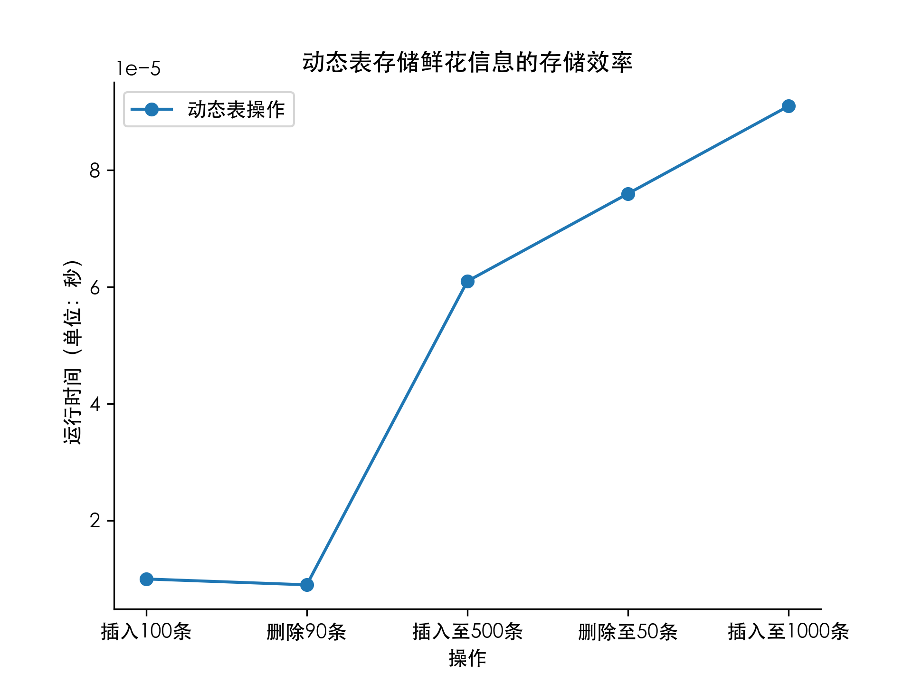
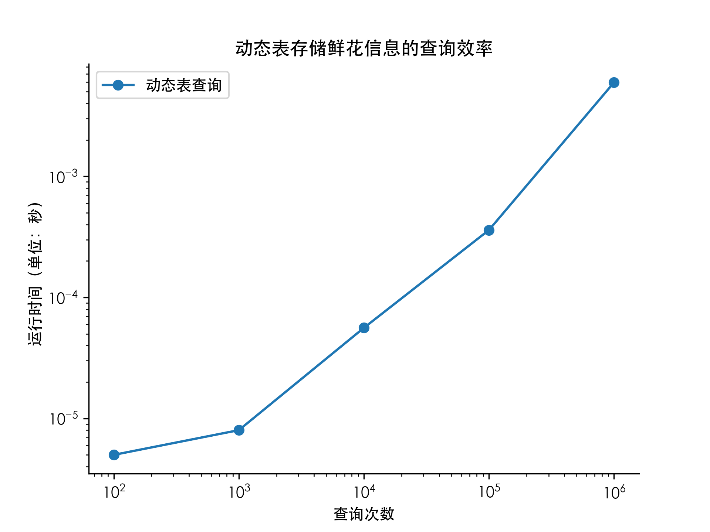

内容与设计思想
有一个公司想开发一个关于花卉的百科全书，用户只要输入花卉的名称，就能够输出花卉的详细信息。花卉包括：牡丹、芍药、茶花、菊花、梅花、兰花、月季、杜鹃花、郁金香、茉莉花、海棠、荷花、栀子花、莲花、百合、康乃馨、玫瑰、格桑花等1000种。这个公司想提升花卉检索和存储效率，打算采用动态表（Dynamic Table）来实现。由于花卉的数量可能会增加，也可能会减少，所实现的动态表需要有如下功能：
能够插入数据
能够删除数据
能够检索数据
- 能够按照参数扩展规模或者缩减规模
实现代码
数据生成器
1
2
3
4
5
6
7
8
9
10
11
12
13
14
15
| #include<iostream>
#include<fstream>
#include<cstdlib>
#include<ctime>
using namespace std;
int main(){
ofstream fout("data.txt");
srand(time(0));
int n;
cin>>n;
fout<<n<<" ";
for(int i = 0; i < n; i++) fout<<rand() % n<<" ";
fout.close();
return 0;
}
|
动态表
1
2
3
4
5
6
7
8
9
10
11
12
13
14
15
16
17
18
19
20
21
22
23
24
25
26
27
28
29
30
31
32
33
34
35
36
37
38
39
40
41
42
43
44
45
46
47
48
49
50
51
52
53
54
55
56
57
58
59
60
61
62
63
64
65
66
67
68
69
70
71
72
73
74
75
76
77
78
79
80
81
82
83
84
85
86
87
88
89
90
91
92
93
94
95
96
97
98
99
100
101
102
103
104
105
106
107
108
109
| #include <iostream>
#include <fstream>
#include <cstdlib>
using namespace std;
int a[5000000];
struct table_info{
int *p;
int size;
int num;
};
table_info *insert(table_info *table, int description){
if (table->size == 0){
table->p = new int[1];
table->size = 1;
}
if (table->num == table->size){
int *ntable = new int[2 * table->size];
for (int i = 0; i < table->num; i++){
ntable[i] = table->p[i];
}
delete[] table->p;
table->p = ntable;
table->size = 2 * table->size;
}
table->p[table->num] = description;
table->num++;
return table;
}
table_info *multi_insert(table_info *table, int n){
int t = table->num;
for (int i = 0; i < n; i++){
insert(table, t + i);
}
return table;
}
table_info *remove(table_info *table){
if (table->size == 0){
return table;
}
if (table->num <= table->size / 2){
int *ntable = new int[table->size / 2];
for (int i = 0; i < table->num; i++){
ntable[i] = table->p[i];
}
delete[] table->p;
table->p = ntable;
table->size = table->size / 2;
}
table->num--;
return table;
}
table_info *multi_remove(table_info *table, int n){
for (int i = 0; i < n; i++) {
remove(table);
}
return table;
}
int query(table_info *table, int i){
if (i >= table->num) return 0;
return table->p[i];
}
int main() {
int op, num;
ifstream fin("data.txt");
clock_t start, stop;
table_info t = {nullptr, 0, 0};
cin>>op>>num;
if(op == 4){
int n;
fin>>n;
multi_insert(&t, n);
for(int i = 0; i < n; i++) fin>>a[i];
start = clock();
for(int i = 0; i < n; i++){
query(&t, a[i]);
}
stop = clock();
cout<<"Time: "<<(double)(stop - start) / CLOCKS_PER_SEC<<endl;
fin.close();
}
else while (op != 0) {
if (op == 1){
start = clock();
multi_insert(&t, num);
stop = clock();
cout<<"Capacity: "<<t.size<<endl;
cout<<"Time: "<<(double)(stop - start) / CLOCKS_PER_SEC<<endl;
}
if (op == 2){
start = clock();
multi_remove(&t, num);
stop = clock();
cout<<"Capacity: "<<t.size<<endl;
cout<<"Time: "<<(double)(stop - start) / CLOCKS_PER_SEC<<endl;
}
if (op == 3){
start = clock();
int r = query(&t, num);
stop = clock();
cout<<"description: "<<r<<endl;
cout<<"Time: "<<(double)(stop - start) / CLOCKS_PER_SEC<<endl;
}
cin >> op >> num;
}
return 0;
}
|
运行效率
时间记录使用了C++自带的clock()函数，通过在程序开头和结尾分别调用clock()函数并将两值相减，即可得到程序运行时间。结果如下：


总结
动态表执行 $n$ 次插入和删除操作的摊还代价为 $\mathcal{O}(n)$，但在实际运行过程中，当插入或删除的数据规模越过 $2$ 的幂次时，运行时间会发生显著的增长，且幂次越高，运行时间的增长幅度越大，这与实验结果相吻合。实验中使用了直接寻址表作为动态表的存储结构，故理论上可以在 $\mathcal{O}(1)$ 的时间内查询给定的花卉信息。考虑到不同存储单元的访问代价略有不同，实验结果基本与理论吻合。